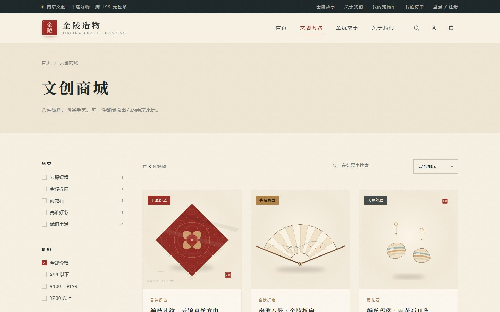

DATA SCIENCE · 2027
把数据变成决策，
把想法做成产品。
我是喻思诚，数据科学与大数据技术本科生。关注数据分析、用户洞察与前端实现， 习惯把一条条流水、一组组指标，做成能被人直接使用和理解的界面。
2个完整项目
54,370条消费流水样本
8页前端页面
7类JavaScript 交互
SELECTED WORK
两个项目，两种能力
一个从数据出发，把 5.4 万条流水变成资助与预警；一个从品牌出发，把南京非遗做成可浏览、可加购的电商前端。都能直接点开体验。
实现细节：数据怎么流动，规则怎么落地
01 · 数据接入
读取 CSV 流水，处理 UTF-8 / GBK 编码与字段校验；以学号为键聚合，算出月均消费与平均单笔消费。
02 · 资助筛选
按 0–700 元区间筛选候选，保留走读/住读身份与预警关联；审核状态在浏览器本地持久化。
03 · 风险规则
大额规则要求同时满足金额与个人均值倍数，深夜规则覆盖 23:00–05:00；命中后进入待处理队列。
作品集内为纯静态复刻版：保留全部交互，数据内置且已脱敏；原始系统为 Flask + SQLite + Pandas。

进入在线演示实现细节：一个课程设计，如何做出品牌感
01 · 视觉系统
以云锦红、城墙灰、宣纸米色为主色，宋体标题 + 无衬线正文；17 个原创 SVG 图标与插画统一质感。
02 · 交互链路
商品数据集中在 data.js；商城支持品类/价格/特色筛选与搜索；详情页按 URL 参数渲染并支持规格选择。
03 · 状态管理
购物车、登录态、订单全部写入 localStorage；优惠码满 199 减 30，结算后生成订单号并支持「再来一单」。
课程设计作品：1 首页 + 7 子页，7 类 JavaScript 功能，含自制 16 秒短片与原创 SVG 素材。
MORE WORK
另外三个数据分析练习
从客户分层到行为漏斗，再到推荐系统，补齐数据分析链路上的不同环节。
航空公司客户价值分析
基于脱敏航空数据做缺失值与异常值处理，提取入会时长、最近乘机、乘机频率、飞行里程、折扣系数五个特征；K-Means 聚类结合 LRMFC 模型完成客户分层。
电商用户行为数据分析
用 Pandas 清洗行为日志，计算 PV、UV、跳失率、复购率等指标，搭建从浏览到加购再到购买的转化漏斗，并用 Tableau 输出多维看板。
基于 Spark 的电影推荐
使用 Spark MLlib 实现协同过滤，完成数据清洗、特征转换、模型训练与参数调优，对比不同模型的推荐准确率。
CAPABILITIES
从清洗、分析，
从清洗、分析，
到把结果放上屏幕。
不把自己限定在单一工具里：能用 SQL 聚合，也能用 CSS 把一张表排清楚；能解释模型结果，也能把交互做完整。
当前重点：补齐统计推断与 A/B 实验能力，继续打磨数据可视化表达。
数据分析
PythonPandasNumPySQLExcelTableau
建模方法
K-MeansLRMFC协同过滤漏斗分析用户分层
开发实现
FlaskSQLiteHTML5CSS3原生 JavaScriptSVG
工程工具
LinuxHadoopSparkHiveVS Code
ABOUT ME
数据科学专业，
数据科学专业，
喜欢把分析落到界面上。
我是喻思诚，武汉工商学院数据科学与大数据技术 2023 级本科生，2027 年毕业。做过数据清洗、客户分层、转化漏斗，也独立完成过 Flask 数据系统和 8 页电商前端。比起只交一份分析报告，我更想做出别人能直接点开、操作、看懂的东西。
正在寻找数据分析、数据挖掘或数据产品方向的实习机会。